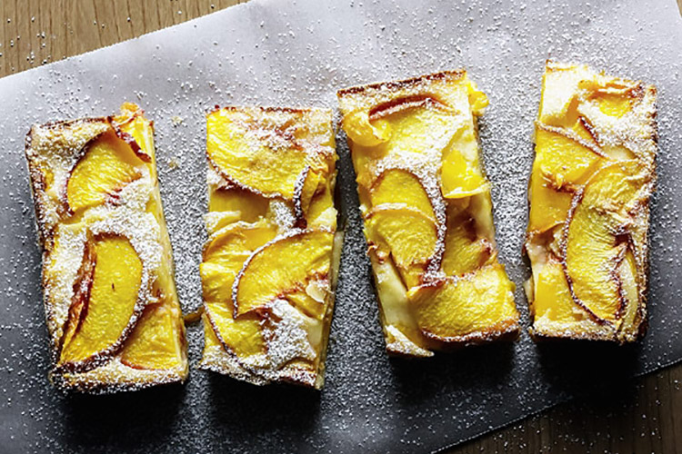

The Invasion of the Peaches: the weeks
when peaches hit their peak and are in such golden, fuzzy profusion at the market that they take over whole fruit stands and you
can buy them at different stages of ripeness. Need to eat them tonight? This tray. In three days? Over there. It's heaven.
Of all the ways it's possible to turn peaches into dessert, besides eating them straight from the fruit bowl, this has to be one of
the simplest. "Clafoutis" sounds fancy - thank you, France - but it's actually just a kind of sweet pancake batter, baked into a
deliciously squidgy cake, which is why combining it with fruit works so well.
There's something about baking a dessert from scratch after dinner, using nothing more complicated than a wooden spoon, that's
very pleasing in a charming, old-school way. If you want to get organised, which isn't terribly hard with this, make the batter
before dinner and leave it somewhere cool until you're ready to cook. In fact, you can even make the batter up to a day ahead, so
it's a dream for entertaining: just slice up the peaches, pour over your pre-made batter and you end up with this beautiful,
delicious dessert.
The amount of fruit really depends on the size of your baking dish. Mine is quite small, about 20 x 12 cm (8 x 5 inches), which
makes it the perfect size for two people, and I use two peaches. As a guide, use enough fruit to make a single layer in the bottom
of your dish and another layer on top.
Serves 2.
2 ripe peaches, halved and sliced
40g (1/4 cup) caster (superfine) sugar
1 egg
45g (1/4 cup) flour
75ml (1/3 cup) milk
1/2 teaspoon vanilla extract
15g (1 tablespoon) butter, melted
icing sugar (powdered sugar), to serve
butter and flour to prepare the baking dish
Set your oven to 180 degree Celcius (350 degree Fahrenheit).
Melt the butter ( it is easiest to do this in the microwave in 15-second bursts) and set aside.
Butter a ramekin or small baking dish and dust with sugar, tapping out the excess.
Put the sugar in a mixing bowl and beat in the egg with a wooden spoon until combined. Add the flour, milk and vanilla, mixing
until everything is incorporated, then stir in the melted butter.
Make a layer of sliced peaches in the dish, overlapping them a little, and pour over the batter. Top with another layer of
peaches.
Bake for 30 minutes, until it has risen and is golden.
Allow to cool for about 10 or 15 minutes, as this is much better eaten warm than piping hot. Dust with a little icing sugar just
before serving.
This recepie is taken from aforkandapencil.com